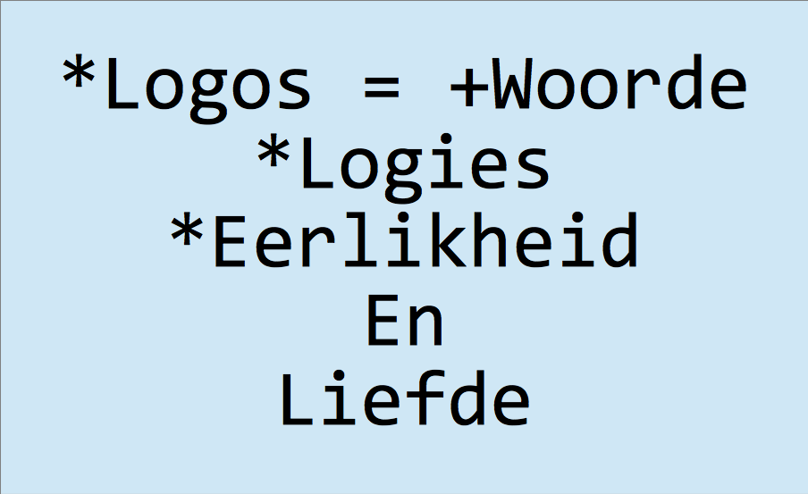

"Die Woord van God"
∞ ⋈ ∞ ∞ ⋈ ∞ ∞ ⋈ ∞
Eerste publikasie: 18 November 2019
Watse woorde is God se woorde? 14 November 2019 se gestryery daaroor was verseker nie die eerste keer, wat Mense nie saamstem daaroor. Tydens die reformasie was die Roomse Kerk se Bybel verkort om die Protestante se Bybel te vorm. Waarheid was 'n kriterium. Baie boeke was verwyder omdat dit nie meer geag was as die "Woord van God".
Sonder om 'n opinie te gee oor die verskil tussen feite en opinies en hoe dit die waarheid raak, wil ek eerder net die belangrikste gedagte, wat aanleiding gegee het tot die artikeltjie neertik.
'n Belangrike onderskeid wat gemaak kan word in die Bybel tussen skrywers van die Bybel se woorde en woorde wat aangehaal is, bv. Jesus se woorde, is, die skrywers se woorde maak 'n afgod en god van Jesus. Jesus het nie 'n afgod of enkele god gemaak van iemand anders. Saam met Buddha het Jesus afgodery/godery teengestaan. Jesus se profesie (prophecy) oor die koms van God, kan beskou word as 'n voorspelling; Mense as dele van God gaan hulself verlos van satanisme/afgodery/godery/imperialisme.
Die naaste wat die Bybel dus kom aan die Woorde van God, is waar Jesus aangehaal word. Paulus bv., wat 'n afgod/god van Jesus gemaak het, se woorde is verder verwyderd van die "Woord van God", as Jesus se woorde, want hy het geskryf Jesus is God, het hy nie? As iemand vir Paulus glo, maak dit nie sin om ook te dink Paulus se woorde is die "Woord van God", want hy het geskryf Jesus is God, het hy nie?
Is daar iemand wat aanvoer die "Woord van God" is net een naam? Waarskynlik, want in die Ou Testament staan daar iewers, as ek dit nie mis het, in die samelewing van goeie mense, het elkeen sy/haar eie naam vir God. Waarskynlik was daar ook bedoel hulle maak nie 'n afgod/god van een persoon of gode/godinne van meer persone as een. In Openbaring is daar geskryf oor 'n Naam vir God wat een woord is.
Volgens Ienketisme, my filosofie, is Woorde van God afgelei van Ienketisme se definisie vir God. God is alle lewende liefdevolle eerlikes plus Logos. Dit beteken onsekerheid oor Ienketisme kan hoofsaaklik wees oor Logos, wat 'n metafisiese begrip is. Waarheid en Liefde is duidelik ontologies gedefinieer in Ienketisme (Intequinism). Die Bybel is deel van Logos en gedeeltes van die Bybel is nie deel van Logos. Daar is nie 'n enkele naam vir God wat universeel korrek is.